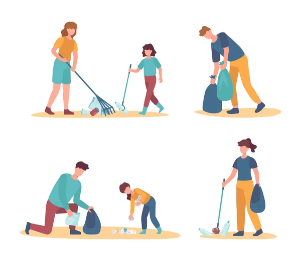

Mi az a vízszennyezés?
Vízszennyezésnek nevezzük azt a környezetszennyező folyamatot, melynek során a víz rosszabb minőségűvé válik. A vízszennyezés veszélyt jelent az ökoszisztémára, és komoly hatással van az állat- és növényvilágra. Az emberi fogyasztásra alkalmatlanná váló víz is ebbe a kategóriába tartozik. A víz érték, mégis gyakran nem bánunk vele kellő felelősséggel.

Mik lehetnek az okai?
A szennyező anyagok sokféle módon kerülhetnek a vizekbe. A szennyvizek közel fele ipari tevékenységből származik, beleértve a technológiai és hűtővizeket, üzemi szennyvizeket és csapadékvizeket. Az olajszennyezés szintén súlyos probléma, mely balesetek és ipari működés révén keletkezik. Ez a szennyezési forma hosszú távon is komoly veszélyt jelent.

Hogyan lehet csökkenteni?
A vízszennyezés megelőzése közös felelősség. Egyénileg környezetbarát tisztítószerek használatával, a műanyaghasználat csökkentésével és szemétszedési akciókban való részvétellel segíthetünk. Az ipar korszerű technológiák alkalmazásával, az állam pedig szabályozással és támogatással járulhat hozzá a megoldáshoz.
